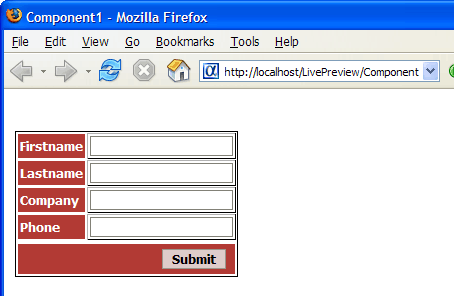

Write-Only Grid Component
The following lesson describes how to create a web component that allows users to enter records, but not to read, modify, or delete records. This procedure covers only the critical steps. There are many potential customizations that you may optionally apply to the resulting grid component.
Create a new tabular grid based on the AlphaSports customer table.
Display the Component Type menu.
Select Updateable.
Select "Columnar" in the Grid layout list.
Display the Grid > Fields menu.
Move the "Firstname", "Lastname", "Company", and "Phone" fields from the Available Fields list to the Selected Fields list.
Display the Grid > Properties menu.
Set the Layout Options > Repeating columns field to 1.
Check Layout Options > Add records only.
Display the Grid > Update Settings menu.
Set the Permissions > Number of new record rows field to 1.
Set the Customization > Target page field to the URL of the page that will confirm the user's input.
Click Browser to see how the grid will appear.

Place the component into an A5W page and publish it.
See Also
Supported By
Alpha Five Version 6 and Above